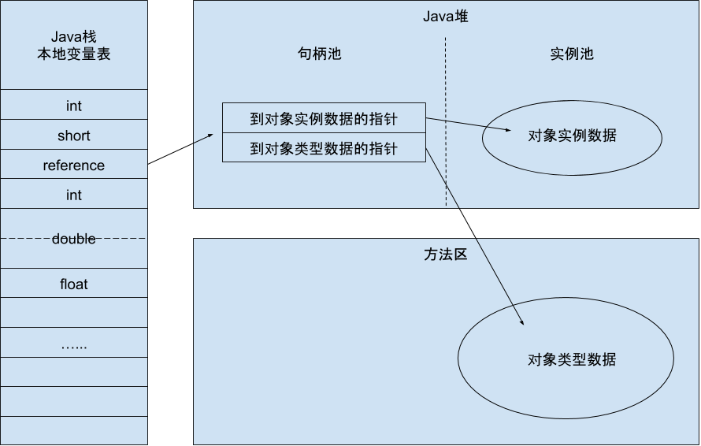
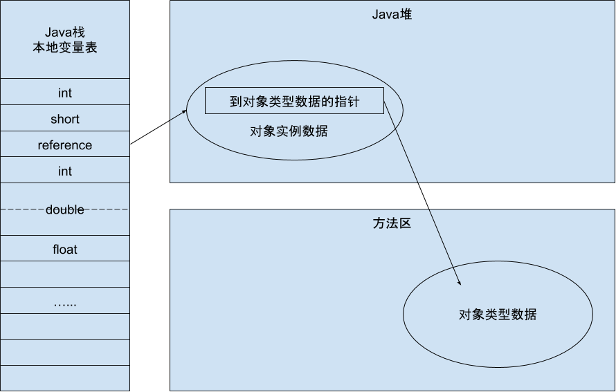

1.对象的分配
1）对象的创建
虚拟机遇到new指令时，先检查指令的参数能否在常量池里定位到一个类的符号引用，并检查这个符号引用是否已被加载、解析和初始化过，否则执行相应的类加载过程。
2）内存分配
类加载检查通过后，虚拟机会为新生对象分配在类加载完成时已确定大小的内存空间。
- 内存分配方式
为对象分配空间的任务等同于把一块确定大小的内存从Java堆中划分出来。存在两种分配方式：
- 指针碰撞（Bump the Pointer）：假设Java堆中内存是绝对规整的，用过的内存和空闲的内存各自一边，中间存在一个作为分界点的指示器，它通过向空闲空间挪动一段与对象大小相等的距离完成内存分配。
- 空闲列表（Free List）：如果Java堆中的内存不是规整的，虚拟机需要维护一个记录哪些内存块可用的列表，在分配的时候从列表中找到一块足够大的空间划分给对象实例，并更新记录上的列表。
选择哪种分配方式由Java堆是否规整决定，而Java堆是否规整又由所采用的垃圾收集器是否带有压缩整理功能决定。因此使用Serial、ParNew等带有Compact算法等收集器时，通常会采用指针碰撞分配算法，而使用CMS这种基于Mark-Sweep算法等收集器时，通常采用空闲列表分配。
- 如何保证线程安全
除了如何划分可用空间之外，还需要考虑对象在虚拟机中是否非常频繁的行为，即使是仅仅修改一个指针所指向的位置，在并发的情况下也并不是线程安全的。解决这个问题有两种方案：
- 对分配内存空间的动作进行同步处理——采用CAS配上失败重试的方法保证更新操作的原子性。
- 把内存分配的动作按照线程划分在不同空间之中——每个线程在Java堆中预先分配一小块内存，称为本地线程分配缓冲（TLAB）。哪个线程要分配内存，就在哪个线程的TLAB上分配，只有TLAB用完并分配新的TLAB时，才需要同步锁定。虚拟机是否使用TLAB，可以通过-XX:+/-UseTLAB参数来设定。
3）内存分配后续
内存分配完成后，需要将分配到的内存空间都初始化为零值（对象头除外）——保证对象的实例字段在Java代码中不赋初值就可以访问到这些字段的数据类型所对应的零值（如果使用TLAB则此过程可以提前至TLAB分配时进行）。
下来虚拟机将对象的信息存放到对象头中。例如对象是哪个类的实例、如何才能找到类的元数据信息、对象的哈希码、GC分代年龄等信息（根据虚拟机当前的运行状态不同，对象头会有不同的设置方式）。
当上面的工作都完成之后可，从虚拟机视角来看对象已经产生，从Java程序视角来看，对象创建才刚刚开始——
2.对象的内存布局
1）对象头（Header）
HotSpot虚拟机的对象头包括两部分信息，Mark Word和类型指针。
- Mark Word
用于存储对象自身运行时的数据，例如哈希吗、GC分代年龄、锁状态标志、线程持有的锁、偏向线程ID、偏向时间戳等，在32位虚拟机和64位虚拟机中分别为32bit和64bit。
对象需要存储的运行时数据很多，实际上已经超出了32位、64位Bitmap结构所能记录的限度，但是对象头信息是与对象自身定义的数据无关的额外存储成本，考虑到虚拟机的空间效率，Mark Word被设计成非固定的数据结构以便在极小的空间内存储尽量多的信息，它会根据对象的状态来复用自己的存储空间。
| 存储内容 | 标志位 | 状态 |
|---|---|---|
| 对象哈希码、对象分代年龄 | 01 | 未锁定 |
| 指向锁记录的指针 | 00 | 轻量级锁定 |
| 指向重量级锁的指针 | 10 | 膨胀（重量级锁定） |
| 空，不需要记录信息 | 11 | GC标记 |
| 偏向锁ID、偏向时间戳、对象分代年龄 | 01 | 可偏向 |
- 类型指针
对象指向它的类元数据的指针，虚拟机通过这个指针来确定这个对象是哪个类的实例，但不是所有的虚拟机实现都必须在对象数据上保留类型指针。另外，如果对象是Java数组，对象头中必须有一块记录数组长度的数据，因为虚拟机可以通过普通Java对象的元数据确定Java对象的大小，但是从数组的元数据中无法确定数组的大小。
2）实例数据（Instance Data）
对象真正存储的有效信息，也是在程序代码中所定义的各种类型的字段内容。这部分的存储顺序受到虚拟机分配策略参数（FieldsAllocationStyle）和字段在Java源码中定义顺序的影响。
HotSpot默认的虚拟机分配策略为long/doubles、ints、shorts/chars、bytes/booleans、oops（Ordinary Object Pointers），从分配策略中华可以看出，相同宽度的字段总是被分配到一起。在满足这个前提条件的情况下，父类中定义的变量会出现在子类之前。如果CompactFields参数设置为true（默认为true），那么子类之中较窄的变量也可能会插入到父类变量的空隙之中。
3）对齐填充（Padding）
对齐填充并不是必然存在的，没有什么特别的含义，仅仅起到占位符的作用。由于HotSpot VM的自动内存管理系统要求对象起始地址必须是8字节的整数倍，而对象头部分正好是8字节的倍数，所以对象实例数据部分没有对齐时就需要通过对齐填充补全。
3.对象的访问定位
Java程序需要通过栈上的reference数据来操作堆上的具体对象，通过虚拟机来决定采用何种方式来定位、访问堆中的对象的具体位置，目前主流的访问方法有使用句柄和直接指针两种方式。
1）使用句柄
如果使用句柄访问，Java堆会划分出一块内存作为句柄池，reference中存储的是对象的句柄地址，而句柄中包含了对象实例数据与对象类型数据各自的具体地址信息，如下图所示。
 使用句柄来访问的最大好处就是reference中存储的是稳定的句柄地址，在对象被移动（垃圾收集时移动对象）时只会改变句柄中的实例数据指针，而reference本身不需要修改。
2）直接指针
如果使用直接指针访问，Java堆对象的布局中就必须考虑如何放置访问类型数据的相关信息，而reference中存储的直接就是对象地址，如下图所示。
 使用直接指针访问方式的最大好处就是速度更快，它节省了一次指针定位的时间开销，由于对象访问在Java堆中非常频繁，因此这类开销积少成多后也是一项非常可观的执行成本。